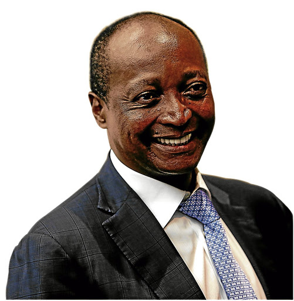

Patrice Motsepe's Branchless Bank Reaches 2 Million Customers
2020.10.18 21:56

Free subscription Get the news that matters from one of the leading news sites in South Africa Drop your mail and be the first to get fresh news Latest Mzansi News COVID-19 Entertainment Proudly African Politics US Election 2020 Sport Education Lifestyle News South Africa Mzansi Latest News Mzansi Latest News Buzz
Patrice Motsepe's branchless bank reaches 2 million customers
2 months ago 5496 views by Mxolisi Mngadi
- South African tycoon Patrice Motsepe is doing very well amid the Covid-19 lockdown
- The businessman s TymeBank, which was launched in February 2019, has reached the 2 million customer-mark
- When the bank launched, it had set itself a target to reach 2 million customers by the end of this year
PAY ATTENTION: Click “See First” under the “Following” tab to see Briefly.co.za News on your News Feed!
Patrice Motsepe s branchless bank is doing very well. TymeBank has reached 2 million customers.
When the bank launched in February 2019, it set itself a target to reach 2 million customers by the end of this year. Looking at the latest numbers, the bank has been received very well in Mzansi.
According to news reports, the bank has stated that 1.2 million people or 60% of this customer base are active customers. 400 000 of the 2 million customers were added during the ongoing lockdown despite footfall to retailers.
According to News24 , TymeBank CEO, Tauriq Keraan said:
Notwithstanding the strong growth in overall customer numbers, we are in particular pleased with the steady growth in the number of active customers, currently at nearly 1.2 million. We also observe that these customers tend to use their accounts more actively as they become more familiar with the benefits.
The publication reports that TymeBank has attracted R10 billion in customer deposits to date. It said in addition to gaining individual customers, it has onboarded over 18 000 small businesses who are now part of its SME client base.
Patrice Motsepe's branchless bank has reached 2 million customers. Image: @motsepefoundation Source: Instagram
READ ALSO: Jet Novuka joins Uzalo as the show looks to shake things up
In other news, Briefly.co.za reported that Kaizer Chiefs midfielder Willard Katsande has been trending on social media after posting yet another hilarious video of himself dressed to the nines and dancing.
In the latest video, the star can be seen dancing a hilarious dance move in the middle of a deserted road. Katsande s captain at Amakhosi Itumeleng Khune and other social media users have reacted to the player s post.
Reacting to the video shared by the Premier Soccer League (PSL), Khune commented with three dancing man emojis.
Other tweeps, who seem to be Kaizer Chiefs supporters, begged Khune to ask Katsande to focus on football now. They want to win the league title this season.
Enjoyed reading our story? Download BRIEFLY s news app on Google Play now and stay up-to-date with major South African news!
Source: Briefly.co.za
Tags: South Africa Latest News Mzansi Latest News Patrice Motsepe Latest News SA Business News Proudly South Africa News Hot: Themba ntuli Cipro company search Nasty c songs
Trending news
Nandi Madida stops playing nice and sends summons to recover R3.7 million 7 hours ago 3597 views Former president's wife wants a divorce and to expose husband's finances 8 hours ago 3428 views Minnie Dlamini-Jones celebrates baby, again: Baby shower number 2 4 hours ago 1762 views Fitness influencer dies of COVID-19 after denying that it exists 7 hours ago 541 views Brilliant Khuzwayo, former Bafana Bafana keeper, attacked in Durban 9 hours ago 1017 views Man praises stepdad: "I love and owe every success to this amazing gent" 6 hours ago 435 views Pitso Mosimane scores major win for Al Ahly CAF Champions League 6 hours ago 415 views Show Comments Jet Novuka joins 'Uzalo' as the show looks to shake things up More about our company About Us Our Team Contact Us Write for Briefly.co.za Privacy Policy Terms and conditions Policies and standards Advertise with us Social media Twitter YouTube Instagram Facebook Read us Leave your email to receive our newsletter Our applications for phones Briefly.co.za, 2020 All rights reserved
MOTSEPE'S BANK PARTNERS WITH ZCC - DailySun ARC is a company within billionaire Patrice Motsepe’s Ubuntu-Botho Investments stable. It expects to break even in 2022 Mazinter said TymeBank expects to break even three years from now - if it can attract 2.1 million active customers and extend credit to 6% of its base.
Patrice Motsepe buys a majority stake in TymeBank Patrice Motsepe brings new bank to SA with TymeDigital 28 September 2017 - 13:58 African Rainbow Capital’s banking partner has secured an operating licence from the South African Reserve Bank.
Motsepe's TymeBank starts strongly with R10m transactions ... Patrice Motsepe, the founder and chairman of African Rainbow Minerals, became a billionaire in 2008 - the first black African on the Forbes list. In 2016, he launched a new private equity firm ...
You may soon get credit from TymeBank - and 5 other things ... Patrice Motsepe is done messing around. He has introduced a Bitcoin-based wealth system that allows South Africans to generate wealth from the comfort of their own homes. The multi-billion rand ...
Patrice Motsepe’s bank disrupts market with a free ... Billionaire Patrice Motsepe is one of South Africa’s richest men. He’s also the first Black African on the Forbes list. In 2016, he launched a private equity firm, African Rainbow Capital (ARC), focused on investing in Africa. Last week, it was announced that ARC is set to acquire TymeDigital, a South African bank with a strong Fintech focus.
Patrice Motsepe's Branchless Bank Reaches 2 Million Customers TymeBank, which Patrice Motsepe’s African Rainbow Capital bought from the Commonwealth Bank of Australia in August, has unveiled its first set of products, centred on a transactional bank ...
Billionaire Motsepe gets going with challenging SA banks ... The partnership between a bank partly owned by Patrice Motsepe and the influential Zion Christian Church ZCC could be a way for TymeBank to rapidly increase the number of clients and compete with some of the country's biggest banks.. The partnership between a bank owned by billionaire Patrice Motsepe and the influential Zion Christian Church could be a way for TymeBank to rapidly increase the ...
Zcc | Patrice Motsepe partners with ZCC for bank The partnership between a bank owned by billionaire Patrice Motsepe and the influential Zion Christian Church could be a way for TymeBank to rapidly increase the number of its clients and compete ...
Patrice Motsepe’s new bank offers free transactional accounts The Commonwealth Bank of Australia has said it will sell 10% of Tyme, a Johannesburg-based lender that allows customers to access funds through their mobile phones, to billionaire Patrice Motsepe ...
Patrice Motsepe takes TymeBank to church - MSN African Rainbow Capital (ARC), an investment firm founded by Patrice Motsepe, recently acquired a 10% stake in TymeDigital, which is a subsidiary of the Commonwealth Bank of Australia, one of the ...